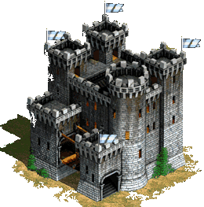

Blaeberry Pie
Bedrule, Scotland 1652

“Angus!”, the ol’ cook called from the doorway. Angus Turnebull looked up from where he was pulling up onions in the garden behind the kitchen . “Ay, Nan?”, Angus inquired. “I need ye to gather some blaeberries. I mean to make a pie fer yer Uncle’s breithlá.” Blaeberry pie was a main staple at Uncle William’s birthday celebration and Agnes Còcaire made the best. “Well, go on! Haste ye back, dear lad!” “Ay!”, said Angus grabbing a basket and running out the back gate.
If Angus was anything, he was indeed swift. He was the fastest in the family, for certain; Probably the fastest in the parish. That didn’t seem to impress the rest of the Turnebull clan though. The Turnebull’s were widely known for their strength, bravery, and often their temper. A tall, lanky lad of 16, Angus was neither strong nor brave. He looked nothing like his father, Uncle, or male cousins. They were much more stout with broad shoulders, burly chests, and thick copper colored hair.
Angus slowed to a walk as he came to a wooded area dotted with shrubs covered in light green oval shaped leaves, little pink flowers, and little round purple berries. He brushed back a long lock of sandy brown hair that had come loose from the twine with which he had tied it. As he gathered berries he began to wonder, as he often did, what his mother looked like. “I’m sure I must resemble her”, he thought, while imagining what life would have been like growing up with her. When he pictured his mother, he saw her with long sandy brown hair and eyes the color of the sky on a clear day, just like his own; a few freckles sprinkled across her nose. He had been told that she was a beauty. “She was the only lass who could have captured John Turnebull’s heart”, Agnes would say. After his mother died giving birth to him, his father decided to move back to Bedrule Castle to help his Uncle William manage the family’s affairs. The castle is the only home he had ever known. He shouldn’t really complain about his life. Even though his Uncle and cousins teased him, they meant no harm. Still, it did make him feel like he didn’t fit in with the rest of the clan. I guess that is why he spent so much time in the kitchen with Agnes.
Agnes had been the cook at Bedrule Castle since before Angus was even born. Angus had asked her once how long she had lived there. She had come to live at the castle when she was 17. Agnes was engaged to marry a charming young farmer from Cavers, Peter McCray, but fate had other plans. There was a terrible sickness that was spreading through the land. No place seemed immune to this disease that so quickly took the lives of those infected. Agnes’ family received word one evening that her fiance and his family had all become ill. They were not sure it was the plague they had been hearing about. Agnes wanted to bring soup and fresh bread to the family to see them through their illness. Her parents were worried that she might become ill as well, but she assured them she would keep her distance. She would just leave the basket of food by the front door and return home. The next morning, Agnes packed a basket of goods and headed to Cavers. When she reached the McCray home, there were soldiers out front. They were painting on the front door what looked to be a large “X”. As soon as the soldiers saw her, they shouted for her to stop. “Do not come any closer!” they said. “This home has been touched by the plague!” Agnes began to run toward the house. “Noooo!”, she screamed. The soldiers grabbed her before she could reach the front door. She shouted for Peter, but the men held onto her tightly. She dropped to her knees sobbing hysterically. The soldiers bade her to get into the back of the supply wagon. They would take her home. As the wagon was pulling away, she caught a glimpse of Peter watching from the window. It was the last time she ever saw him. She would not see her own family again either, for as they approached her tiny hamlet, they found the road blocked. “We have jist quarantined the area”, one of the men told the soldiers. “But I have tae get back to my family”, Agnes cried. “I’m sorry. Those not showin’ signs of the sickness are bein’ taken tae Bedrule Parish. Mibbeh yer family is there.” But they weren’t there. Later, she was told by a neighbor that her family refused to leave home until their daughter returned. “It was my fault.” she told Angus. “If I hadnae insisted on goin’ tae help the McCrays, my family would have been taken tae safety, away from the black death. Yer grandfather took me in. He told me I could work at the castle as long as I wanted. I been here ever since.” Poor, heartbroken Agnes. She never married and never had children of her own, but when Angus arrived after losing his mother she felt a kinship with the child. She took to him like a mother hen. For the first time since the terrible day she lost her family, she felt love. Agnes was the closest thing to a mother that he would ever know.